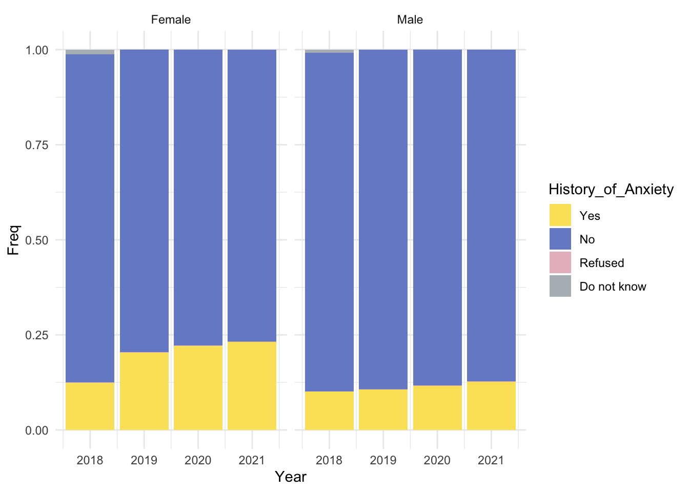

Chapter 3 Data
3.1 Sources
The National Health Interview Survey (NHIS) data we used was collected and processed by NCHS, and shared in various methods (in this project we used CSV files), along with documentations that provide summaries and raw insights of such data. In short, it contains the results of around 30,000 interviews (individual people) per year.
The NCHS website provides NHIS survey data for each year from 1993 to 2021. We only selected the recent four years of data for analysis purposely. One major reason comes from the interest in analyzing the covid-19 effect on the behaviors of NHIS data. Another is the limitation of older data which doesn’t necessarily contain information on the factors we would like to explore. Therefore, we selected NHIS data ranging from 2018 to 2021 in the hope to explore our interests at the same time minimizing our limitations. We also limit our groups of adults to 18-65 aged since elderly are usually seen as separate group to focus on in the field of health study.
## tibble [84,975 × 17] (S3: tbl_df/tbl/data.frame)
## $ History_of_Anxiety : chr [1:84975] "No" "No" "Yes" "No" ...
## $ Age : num [1:84975] 28 60 60 32 61 28 63 28 52 29 ...
## $ Marital_Status : chr [1:84975] "Married" "Married" "Married" "Married" ...
## $ Sex : chr [1:84975] "Female" "Male" "Male" "Male" ...
## $ Race : chr [1:84975] "White" "Others" "White" "White" ...
## $ Sexual_Orientation : chr [1:84975] "Straight" "Straight" "Straight" "Straight" ...
## $ Region : chr [1:84975] "South" "South" "South" "South" ...
## $ Smoking : chr [1:84975] "Some days" "Missing" "Every day" "Missing" ...
## $ Employment : chr [1:84975] "Yes" "Yes" "Yes" "Yes" ...
## $ Chronic_pain : chr [1:84975] "Never" "Some days" "Most days" "Some days" ...
## $ History_of_Heart_disease: chr [1:84975] "No" "No" "Yes" "No" ...
## $ History_of_Cancer : chr [1:84975] "No" "No" "No" "No" ...
## $ History_of_Stroke : chr [1:84975] "No" "No" "No" "No" ...
## $ History_of_Diabetes : chr [1:84975] "No" "No" "Yes" "No" ...
## $ History_of_Asthma : chr [1:84975] "No" "No" "Yes" "No" ...
## $ Year : num [1:84975] 2019 2019 2019 2019 2019 ...
## $ Covid_Year : chr [1:84975] "No" "No" "No" "No" ...After the process of data cleanup, we have the data information shown as the figure above. The cleaned data contains 17 columns, with 16 categorical variables and 1 numerical variable (age). The most frequent values of our variables (except age) are yes or no, which is consistent with the characteristics of survey data. At the same time, since we set our target group to 18 to 65 years old adults, we filter out other ages group which reduced the sum of nearly 30,000 people each year, total four years of NHIS survey data, to 84975 rows.
Moreover, in consideration of missing data as some respondents might not have the full willingness to reveal some sensitive or private information, we make sure when we cleaned the data we don’t accidently exclude such “missing” values’ rows. Such information in fact can also contribute to our analysis in different methods: the relationship of reasons of not answer to anxiety. At the same time, a high amount of missing data can also reveal another kind of concern, which also became clear after we cleaned the data, as several columns had missing values, and not all answers were valuable. This could be a potential problem for the accuracy of our data.
3.2 Cleaning / transformation
The data we are looking for on the official NCHS website is a compressed file ending in “.zip”. In this case, we use the URL to read it. Then we unzip it to extract the CSV file. Since we will be using four years of data, this step needs to be repeated four times.
In the original document, each column corresponds to a survey question. Using the question as a column name is not practical because it is very long. Therefore, the column names in the file are labelled with a combination of letters and numbers. NCHS provides the documentation to help us understand each column’s meaning and the corresponding survey question. Once we have confirmed the columns we need to use by searching for keywords, we use select to retrieve these columns from each year of data. We know the characteristics of each column, but the viewer may have yet to have the opportunity to read the documentation. Therefore, we need to change the names of the columns so that the viewer understands the values they are referring to. It will also be easier for us to use during the rest of the exploratory data analysis.
Next, we notice that the column values are labelled by the numbers 1, 2, 3, 4, etc. Just like the answers to the multiple-choice questions. So to convert the column values into easy-to-read text, we open the documentation again, which indicates the answer for each number. By using mutate, we converted each column’s values into easy-to-understand words. After this cleaning of the data, we can start the subsequent analysis.
3.3 Missing value analysis

The data we use is based on the interviewer’s responses. Because of the interview data and the fact that it is not mandatory to answer each question, we have values for many questions that are missing. That is, the interviewees chose not to answer the question. With four years of data, we will deal with a large portion of missing values. We tried to use a heatmap to visualize the missing values in rows and columns, but because of the large amount of data. It is not possible to plot the whole graph. So we chose to use plot_missing() from redav to help us see if there are any patterns hidden in these missing values.
Based on the results above, we can see that for the more basic personal information such as age, gender and region. The interviewees are willing to choose to answer. This is not difficult to understand, as we mentioned that each year’s interview population was randomly selected through a geographic subgroup sampling technique. The area of residence of the popular respondents at the time of the interview was also not non-disclosed. In the case of the more personal questions about personal health and sexual orientation, there are a large number of missing values. Therefore, we can see that the interviewees are still more concerned about their privacy. This also reflects the uncertainty of the data we use. The missing values of columns show that the overlap of the Smoking, History of Anxiety, and Sexual Orientation columns is slightly relatively high. However, there is no obvious pattern. Therefore, there is no significant pattern of missing values in the dataset.